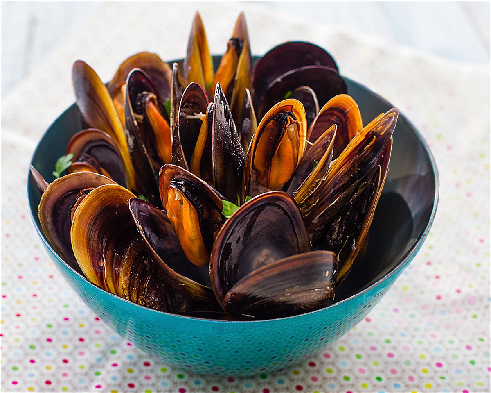

Inicio
Sobre mí
Recetas
Contacto
Otras Cosas
Mejillones al Vapor

⏰
Tiempo total:
15 minutos
Ingredientes
500 gramos de mejillones de roca
1/2 vaso de vino blanco
1/2 limón
1 ramita de romero
Un chorrito de aceite de oliva
Pimienta blanca molida
Preparación
1.
Raspa y lava bien los mejillones para eliminar impurezas.
2.
Pon los mejillones en una olla y rocía con pimienta blanca molida, aceite de oliva, el jugo del medio limón y el vino blanco.
3.
Añade la ramita de romero y tapa la olla.
4.
Cocina a fuego vivo hasta que las conchas se abran. Retira rápidamente del fuego.
5.
Sirve en cuencos y disfruta caliente.
Autor: Recetas Caseras
Consejos:
Si prefieres un sabor más intenso, añade una pizca de ajo picado antes de cocinar.
Recetas